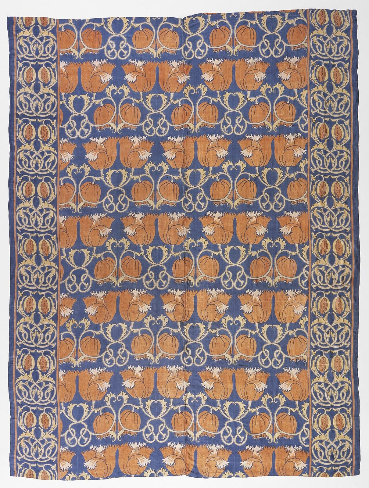

References / Textile / 377
Voysey block-printed silk bed cover
A bed cover by C. F. A. Voysey with rows of mirrored orange flowers on blue, held in a cream scroll lattice and edged by denser borders.
- Source
- Wikimedia Commons: Bed cover, LACMA AC1995.250.46
- Creator
- C. F. A. Voysey (designer); G. P. and J. Baker, Ltd.
- Made
- Designed about 1888; printed about 1895
- Style
- Arts and Crafts (agent-proposed, not yet reviewed by a person)
- Moods
- Bold, rhythmic, handmade
- Evidence
- Inspected the Los Angeles County Museum of Art image of AC1995.250.46 through its Commons copy (1536 × 2032 px; viewed at 1280 px wide). LACMA’s own collection page was not opened; the object data come from the Commons record.
- Reviewed
- Rights
- Open license, stored. License: public domain. Rights policy

Context
LACMA dates it England, about 1895, designed about 1888, block-printed silk, 234.95 × 177.8 cm, Gift of Ellen and Max Palevsky, and names Voysey and G. P. and J. Baker, Ltd. Commons record.
Wikipedia notes that many of Voysey’s patterns rely on rhythmically contrasted areas of flat, clear colour bounded by dark or pale outlines, with plants and birds as the positive shapes. Wikipedia: C. F. A. Voysey.
Commons files the image under Art Nouveau patterns as well as Voysey textiles.
Observed
- The central field has a medium blue ground covered by horizontal rows of orange tulip-like flowers, each pair mirrored across a vertical axis.
- Round orange seed heads alternate with the flowers.
- Cream stems curl into symmetrical scrolls and figure-eight knots between the rows.
- A side border on each edge has a denser cream interlace with orange pods, separated from the field by thin orange lines.
- Motifs have flat fills and dark or pale outlines, without shading. The silk shows creases and some fading.
Why it belongs
The work fits the rubric’s flat, symmetrical, lattice-based repeat. The orange and blue are lighter and warmer than Morris’s madder and indigo.
The curling scrolls explain why Commons also files it under Art Nouveau: the curves are there, but each is mirrored and locked into rows.
Borrow
Mirror each motif pair and stack the pairs in rows to keep a lively curve static.
Edge a field with a narrower, denser border and separate the two with a thin line in the accent colour.
Measured
Machine-extracted by tools/image-traits.py on . Full measurement.
- Mean chroma
- 0.17
- Palette
- #515b7f 17%
- #eeeeee 10%
- #c3865a 6%
- #ba7a50 5%
- #474e6d 4%
- #b0a49c 4%
- #c0b3a8 4%
- #b08163 4%

